What to look for in February फ़रवरी में
Species whose season is February in eastern Uttar Pradesh, according to published accounts. A further 501 species are about all year.
प्रकाशित स्रोतों के अनुसार जिनका मौसम फ़रवरी है। 501 और प्रजातियाँ साल भर मिलती हैं।
जनवरी · फ़रवरी · मार्च · अप्रैल · मई · जून · जुलाई · अगस्त · सितंबर · अक्टूबर · नवंबर · दिसंबर
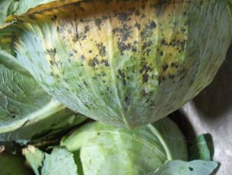
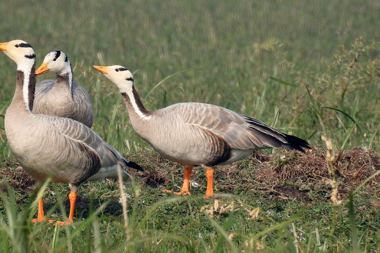
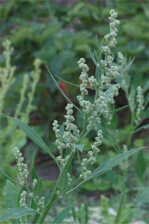

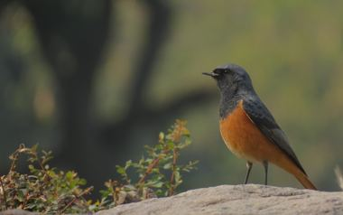
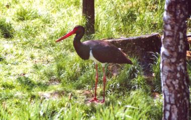
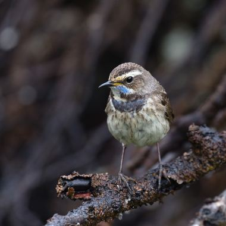
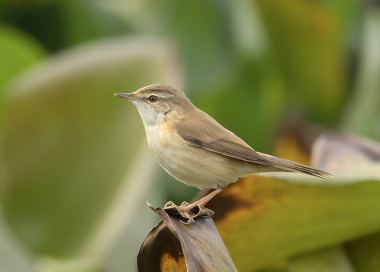
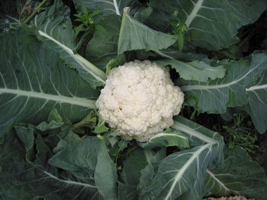
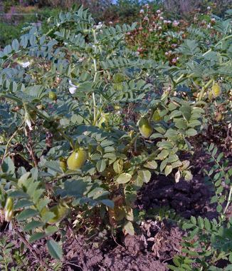
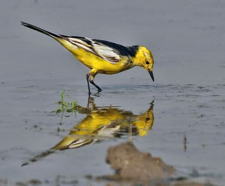
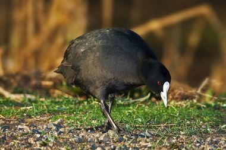
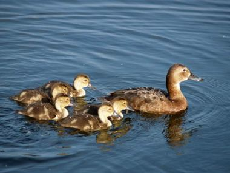
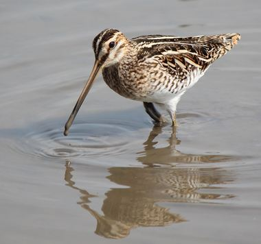
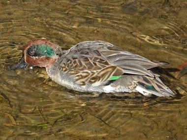
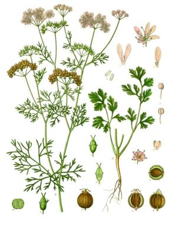
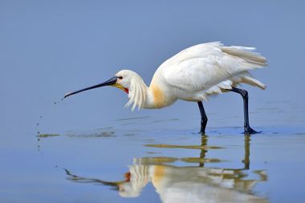
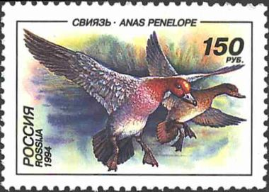
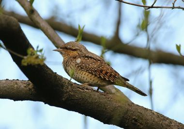
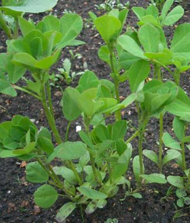
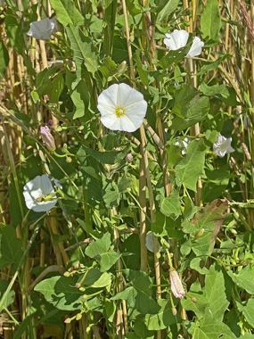
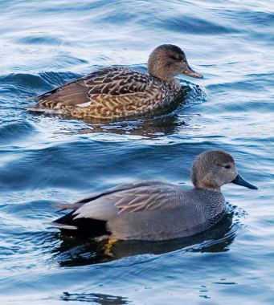
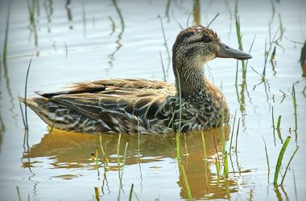
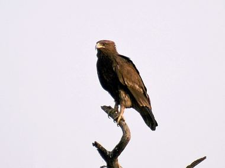
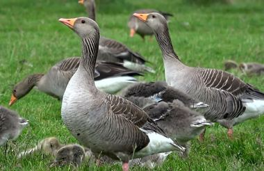
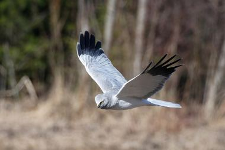
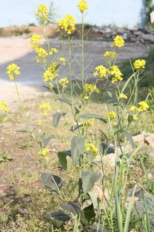
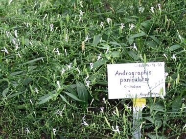
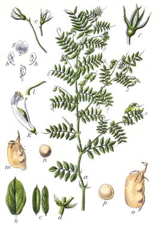
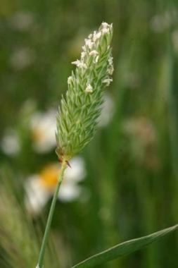
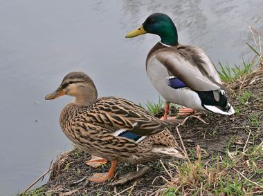
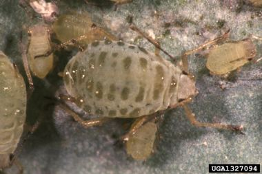
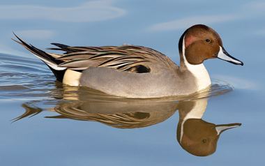
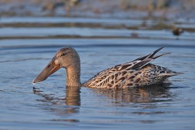
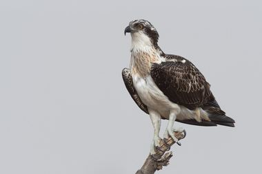
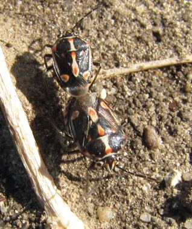
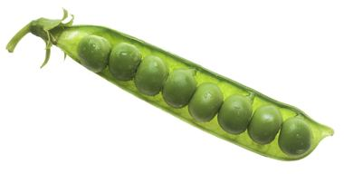
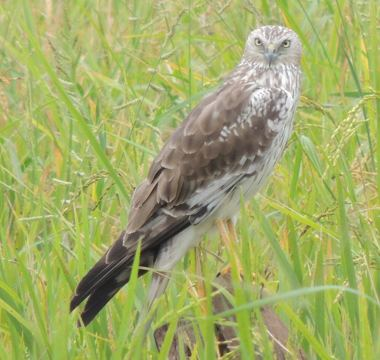
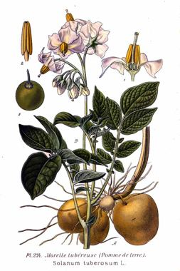
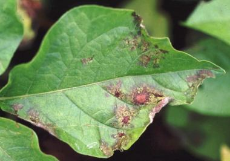
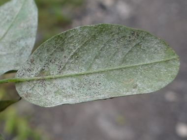
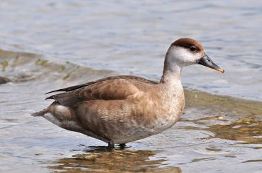
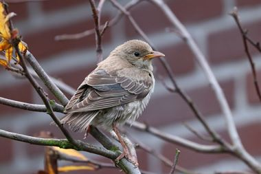
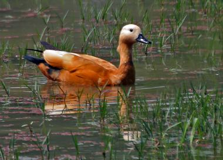
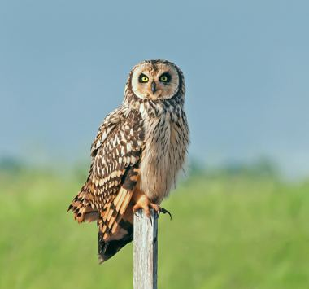
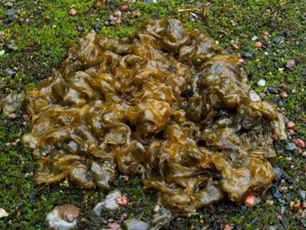
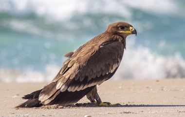
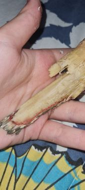
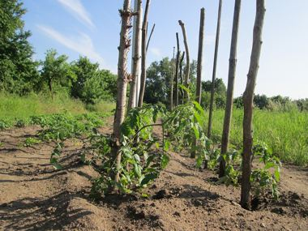
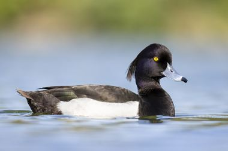

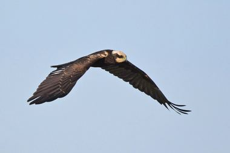